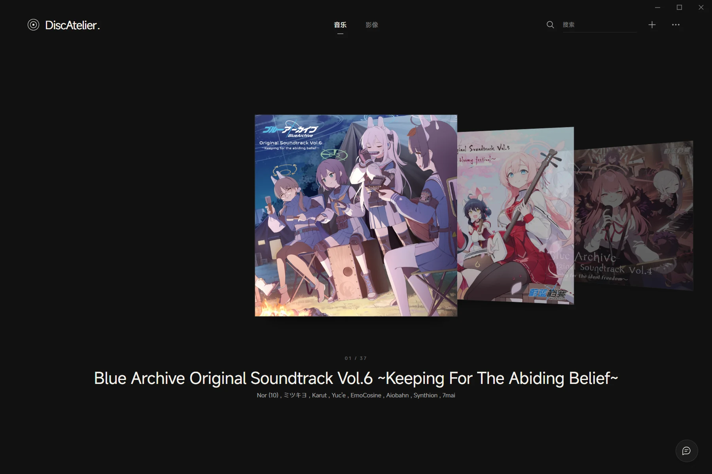
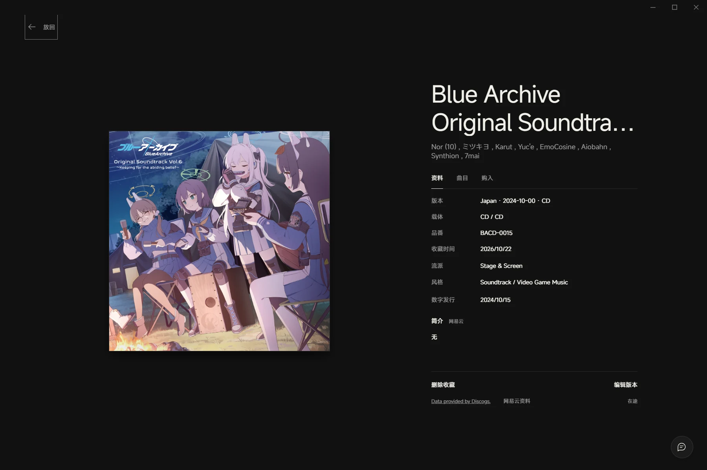
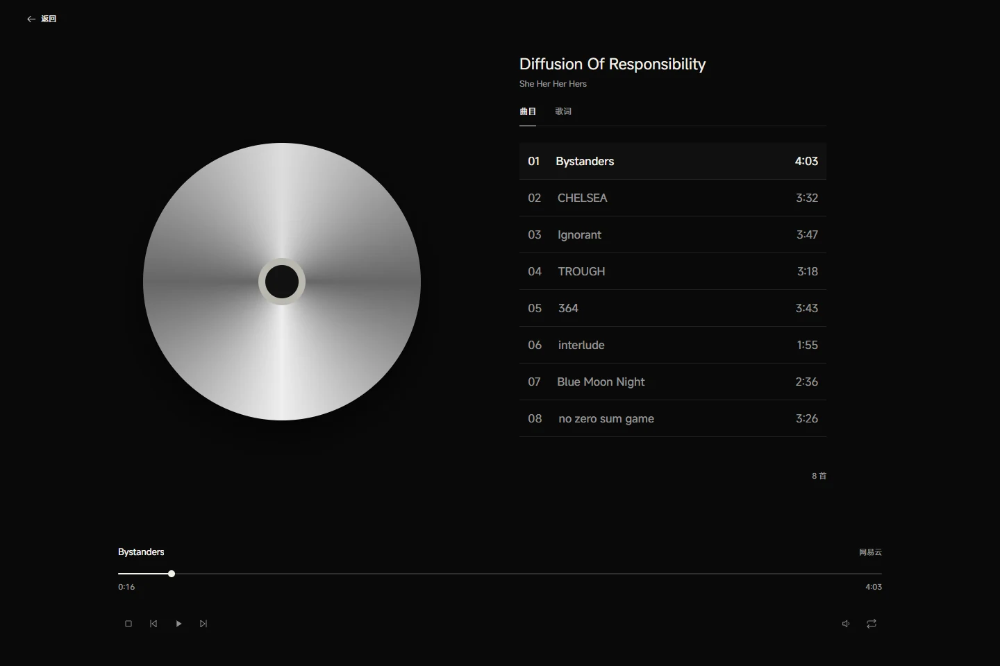
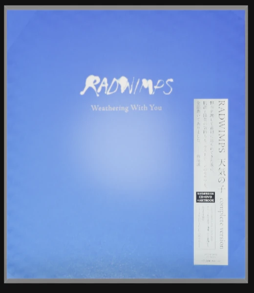

浏览、搜索与排序
可以按封面或列表浏览收藏，在列表中拖拽排序，按购入状态筛选。搜索范围包括标题、作者、曲目和章节；同版多套收藏与同捆购入也能分别记录。
Windows 桌面应用
在 Windows 上管理 CD、DVD 和 Blu-ray 的版本、曲目与购入记录，
获取作品资料，并播放光盘、本地文件和网易云音乐。

01 / 收藏管理
同一专辑可以有不同发行版本，同一版本也可以收藏多套。
发行资料按版本保存，每套实体分别记录价格、购入日期、卖家、存放位置和状态。

可以按封面或列表浏览收藏，在列表中拖拽排序，按购入状态筛选。搜索范围包括标题、作者、曲目和章节；同版多套收藏与同捆购入也能分别记录。
一套实体包含多张光盘时，可以为每张 Disc 绑定不同的网易云专辑，分别保留简介与曲目。歌曲也能单独关联，匹配错误时可手动修改。
可以从 Discogs、网易云、TMDB 与 Bangumi 获取资料，再编辑曲目、演奏与制作人员信息（Credits）、封面和章节。数据源没有收录的作品，也能手动添加。
02 / 音乐播放
音频 CD、本地音乐和网易云使用相同的播放界面，提供曲目列表、歌词、进度、音量与循环控制。返回收藏页后，音乐可以继续播放。

播放队列与循环模式右下角队列保留最近三个专辑，支持列表循环和单曲循环。
滚动歌词与译文网易云原文与可用译文随进度定位；已关联的本地音乐和 CD 也可使用。
网易云扫码登录扫码登录网易云后，根据账号与歌曲权限提供完整音源或试听。

应用内模型画面局部03 / 三维模型
为收藏导入交互模型后，可以按照模型定义打开盒盖、取放部件、拆装或翻页。也可直接导入三维文件，查看材质、调整视角，并播放文件中已有的动画。
支持 .ateliermodel、GLB、OBJ、FBX，以及 SKP 静态模型（2017 二进制及兼容 ZIP 容器，已验证 2024 / 2026 文件）。原格式模型的交互范围取决于文件自身内容。
04 / 手机上传与 AI 辅助
手机连接
手机与电脑连接同一 Wi-Fi 后，扫码打开手机页面，即可连续扫描条码，或上传购物截图与包装照片。AI 可以识别多张购物截图中的购入信息，你选择需要的字段并核对后再保存。
AI 助手
可以和助手聊音乐、查询收藏，让它准备添加收藏、补全资料、切换封面或控制播放。回复会逐步显示；涉及修改收藏时，先列出具体变更，等你确认后再执行。
3 分钟功能演示
功能一览
音乐 / 影像分区；封面陈列与列表模式；拖拽排序、状态筛选、标题 / 作者 / 曲目 / 章节搜索。
发行版本与实体副本分离；条码、品番、载体、发行信息；多套收藏、同捆购入、卖家、位置与日期；原币金额与每日汇率参考汇总。
Discogs 发行搜索与版本替换；网易云专辑 / 歌曲链接读取、直接入库、专辑封面；多专辑关联、Disc 绑定、独立歌曲关联与匹配修正。
TMDB / Bangumi 作品搜索、链接读取与包装识别；原名与译名、不同来源简介、章节匹配与图文、角色头像和资料、合并图库；前后编翻面。
曲目、小标题、逐曲 Credits、公司资料和章节可编辑；影像作品资料与实体版本分开保存。
CD 曲目资料识别；CD、本地音乐与网易云统一播放页；网易云扫码登录；音量、进度、上一首 / 下一首、队列、循环；跨页播放与最近三个专辑历史。
网易云歌词原文与可用译文、跟随与点击跳转；Windows 系统媒体控制可选开启。
DVD / Blu-ray 光驱播放；兼容光盘的菜单、章节、音轨、速度与全屏；AI 菜单识别与收藏关联，可手动纠正。
收藏内关联本地文件夹，自动匹配曲目 / 章节并支持修正；从条目直接播放。光盘菜单、加密与驱动兼容性会影响实际可播放范围。
自选封面、数据源封面；可交互 .ateliermodel 模型，支持 V2 / V3 / V4 定义的取放、拆装、独立书册翻页。
GLB / OBJ / FBX / SKP 文件导入，材质与贴图读取、旋转 / 平移 / 缩放 / 重置，以及文件中受支持的动画；不自动推断拆装动作。
模型在后台加载与绘制，加载时仍可操作界面。另提供中文模型指南、AI Skill、可复制提示词与制作入门包。
流式 AI 对话、收藏查询、添加与资料补全、封面切换、播放控制；收藏写入前展示变更并确认。
多张购物截图粘贴或上传，提取字段并展示依据；包装图片识别作品。手机同一 Wi-Fi 扫码连接，连续条码扫描、照片上传，连接有时限。
本地收藏库、Windows 凭据管理器；创建备份、恢复预览、备份占用查看与手动选择删除；升级前自动备份。
启动检查更新，允许忽略；应用内校验更新签名。备份不会因版本发布自动删除。本地媒体文件本身不打包进收藏备份。
下载安装
Windows x64 · 开源软件 · 所需 WebView2 由安装程序引导安装
资料查询和在线播放需要网络；部分服务需要在设置中填写凭据。AI 功能需配置兼容服务，发送识别请求时会将所选图片或相关资料交给该服务。网易云音源由账号权限与歌曲可用性决定。光盘播放需要相应光驱，部分加密和菜单格式受兼容性限制。
安装包未配置 Windows Authenticode 签名，Windows 可能显示 SmartScreen 提示。请从项目官方 Release 获取安装包。应用内更新签名与 Windows 代码签名是不同机制。